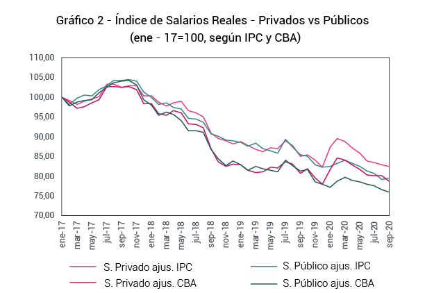
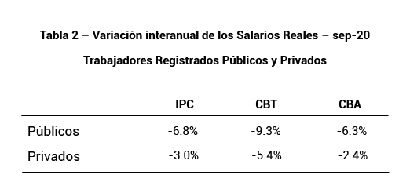

Publicado el 14/12/2020
De la mano con los hallazgos publicados en el informe N° 1 del Índice de salarios reales (noviembre 2020), podemos observar en el gráfico 1 que la tendencia decreciente en los salarios reales de los trabajadores registrados (según la evolución del IPC y las canastas CBT y CBA) continúa descendiendo, con una variación acumulada en lo que va del 2020 de -1.1% con respecto al IPC y de -3.4% con respecto a la CBT. La brecha promedio en el año 2020 entre el salario real IPC y el salario real CBT es de el 4.48%, mostrando la variación diferencial del salario real respecto de la canasta de bienes y servicios más representativa de los trabajadores.
En la tabla 1 vemos la variación interanual del salario real para septiembre 2020, discriminado entre trabajadores registrados y no registrados. Para el caso de trabajadores registrados, se observa una caída del -4.5% en relación al IPC, y una caída del -7.0% respecto de la CBT. Esta diferencia se explica por el incremento diferencial en los precios de los alimentos que representan la mayor proporción de gasto de los trabajadores, que debido al sesgo plutocrático del IPC, este impacto se ve amortiguado.
Para el caso de los trabajadores no registrados, principales beneficiarios de los programas de transferencias no condicionadas del gobierno nacional para superar los efectos negativos de la pandemia, se observa que la variación interanual del salario real con respecto al IPC es positiva, 0.8%. Sin embargo, el incremento en los precios de los alimentos impactó negativamente, disminuyendo un -1.9% su salario real respecto de la CBT.

En el gráfico 2, observamos la serie completa del índice de salario real para trabajadores públicos y privados. Al igual que en el gráfico anterior, vemos que para septiembre de 2020 se acentúa la caída en los salarios reales para ambos sectores registrados, con una brecha promedio entre trabajadores privados y públicos del 4.69% según IPC, y del 4.82%, según CBT. En lo que va del presente año, es interesante notar que la variación acumulada de los salarios reales medidos por IPC es del 0.5% para trabajadores privados y del -3.3% para trabajadores públicos. Esta discrepancia, se hace aún más pronunciada si se calcula el salario real respecto de la variación de la CBT: para trabajadores privados la variación del 2020 es del -1.8% y para los públicos del -5.6%. En ambos casos, los trabajadores del sector público sufrieron caídas más pronunciadas en términos reales en relación a los trabajadores del sector privado.

En la tabla 2 se observan las variaciones interanuales con respecto a septiembre del 2019. En todos los casos se observa un desplome más pronunciado para los trabajadores del sector público. Lo más resonante es la caída del -9.3% para públicos y del -5.4% para privados si se tiene en cuenta la variación de la CBT. Esta pérdida significativa del salario real, se debe al incremento diferencial de precios de los bienes que representan fielmente la canasta de consumo de los trabajadores en general.
Finalmente, se incorpora al informe la evolución del salario respecto a las variaciones en el Tipo de Cambio Nominal de referencia (A3500). De esta forma, es posible analizar la trayectoria del costo salarial en dólares, insumo clave en la determinación de los costos de producción.
En primer lugar, analizamos el gráfico 3 que muestra la evolución del salario según el tipo de cambio, para trabajadores registrados y no registrados. Se puede ver de forma clara que, después de las devaluaciones del 2018 producto de la inestabilidad macroeconómica existe un pronunciado derrumbe del salario medido en dólares de -65.7% para trabajadores registrados y de un -71.3% para trabajadores no registrados. Esto representa un ajuste de enorme magnitud del salario medido en dólares, que supera los efectos negativos de las devaluaciones ocurridas post crisis del año 2001. Si tenemos en cuenta las variaciones acumuladas para los salarios medidos en dólares de los trabajadores registrados y no registrados desde septiembre de 2019 hasta septiembre de 2020, se observa que los primeros han caído 6.1%, y los segundos 2.3%.
Del gráfico 4 se desprende la evolución del salario medido en dólares pero para trabajadores registrados públicos y privados. Es posible observar que, luego de caída mencionada anteriormente, los salarios expresados en moneda extranjera han caído pero con menor intensidad, producto de los esfuerzos de la autoridad monetaria para evitar abruptas devaluaciones, utilizando herramientas como controles cambiarios, y finalmente la política de crawling-peg, adoptada por el nuevo gobierno que fija la tasa de
devaluación alrededor de un 3% mensual.
Emiliano Achilli, Germán Gambetta y Nicolás Monzón